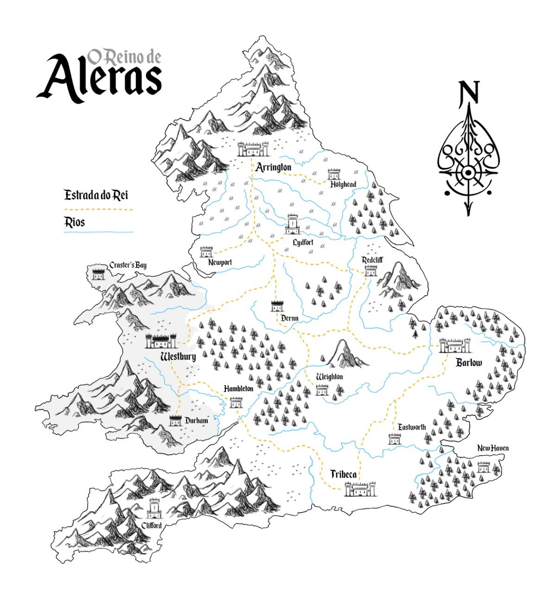

A ilha de Aleras cedeu a uma divisão não oficial após a Alvorada Negra. Antes, todas as bandeiras juravam sua lealdade incondicional a Westbury. Não que hoje seja diferente. Longe disso. Mas hoje, com o crescente medo do avanço da horda demoníaca, o afastamento tem se tornada mais comum. O Rei Frederik Bertram tenta ajudar como pode, e desempenha um excelente trabalho com isso, mas o murmurinho crescente entre os mais desafortunados da cada vez mais força a essa divisão.
As regiões são:
Norte, Sul, Leste, Oeste e A Região Desamparada
O NORTE É A ESPERANÇA
Com a migração da capital para a cidade de Arrington, na região norte, a força militar cresceu consideravelmente, tomando uma maior prioridade. Com a segurança que a ordem dos Paladinos de Azrael trazem em adição a própria força militar que a cidade já possuía fica difícil acreditar que não exista esperança.
Como boa parte da burguesia da região oeste migrou ao norte, juntando-se com os já existentes lá, é comum encontrar pessoas que desprezam a maioria dos outros como infectados sujos, rudes e sem cultura. Quando mais ao norte essas pessoas residem, mas elas têm essa opinião formada. É como se para elas, a Alvorada Negra nunca tivesse existido. Visitantes ou até mesmo os poucos casos de estrangeiros geralmente saem de boca aberta com a opulência que o cidadão comum desfruta, em comparação com a situação do resto do povo de Aleras.
O norte tem uma sociedade disciplinada e ordenada, que é vista como primordial. As leis são aplicadas por um magistrado forte, apoiado pelos militares e principalmente pela igreja. Não é permitido às mulheres votar, possuir propriedades ou divorciar-se do marido, exceto em circunstâncias extremas que geralmente exigem a intervenção de uma autoridade da Igreja das Três Estrelas.
A cavalaria militar sempre foi um forte do norte, e agora em conjunto com a bem equipada ordem dos Paladinos de Azarel tem em seu núcleo veteranos endurecidos pela batalha. Extremamente bem blindados e disciplinados, esses soldados treinam constantemente para lutar em unidades próximas, que variam de um pequeno esquadrão de soldados a legiões de vários milhares. Em troca de seu serviço militar, os soldados se aposentam com uma pequena pensão vitalícia e uma casa em um hectare de terra em um território produtivo. Esses veteranos se estabelecem e formam novas vilas, incentivando o crescimento do império, e da igreja. Para os estrangeiros a melhor forma de se manter em combate é ingressando em uma das inúmeras companhias mercenárias, espalhadas norte afora.
A região norte tem como cidade principal a agora capital do reinado, Arrington, e Lydfort como cidade de destaque. As vilas de Holyhead, Newport e Redclif fazem parte da região norte.
Arrington
"Sob a sombra das trevas, florescemos"
Arrington se tornou a capital de Aleras após a queda de Westbury dez anos atrás. A cidade é localizada no norte, na base de uma grande cordilheira, e seu território é delineado por uma enorme muralha, protegida pela mais eficiente armada do Reino, a Guarda Real. Por esse motivo é considerada o local mais seguro contra a horda infernal.
A capital também é a sede da Igreja das Três Estrelas, liderada pelo Cardeal Hyland, além do centro de treinamento dos Paladinos da Ordem de Azrael, liderada por Nathanael Green, conhecido como Anjo. Embora os guerreiros divinos sejam enviados para proteger as outras cidades do Reino, seu maior contingente permanece na capital, favorecendo o fortalecimento da cidade.
As residências dos cidadãos mais ricos são compostos defensáveis, com belos pisos de mármore, mosaicos, estátuas, afrescos e pátios muros. Teatros, mercados, templos e edifícios administrativos ostentam colunas altas e elegantes e painéis de vidro de cores vivas.
Holyhead
Hollyhead é a vila mais protegida de Aleras, abaixo apenas da capital Arrington. Parte da força militar de Arrington, mas se engana que eles são como uma última barreira de segurança antes da capital. Essa é a função de Lydfort. A guarnição conhecida como a Pena e Espada, destacada para Holyhead é responsável por guardar os livros e pergaminhos que conseguiram ser salvos na retirada de Westbury. Por isso, uma das profissões mais comuns, tanto para homens quanto para mulheres, são as de escriba, para assim tentar recuperar a história de Arrington.
Newport
Newport antes era uma cidade conhecida por ser um promissor ponto de descanso entre Westbury e Arrington, mas a queda da antiga capital levou os planos de Casper Bennett, seu antigo prefeito as ruinas. Hoje, seu sucessor faz de tudo para que Newport não seja abandonada pela capital por sua proximidade com o local da Alvorada Negra como outras cidades foram. Por isso, Casper Bennett cobra altas taxas de impostos, acreditando assim que será salvo ao menor sinal de invasão.
Redclif
Uma cidade de forjadores. A força econômica de Redcliff ainda é a forjaria, tanto de armas quanto de equipamentos. Antes da Alvorada Negra, Redcliff e Durham mantinham uma disputa saudável entre qual das duas cidades possuía os melhores forjadores. Havia té mesmo um ditado que dizia que “A melhor arma de Durham nunca perfurará a pior armadura de Redcliff, assim como uma arma de Redcliff, nunca chegara aos pés do pior ferro de Durham”. Hoje, sobrecarregada, Redcliff se esforça em atender a demanda de Arrington.
Lydfort
Conhecida como a cidade dos portões, Lydfort só não é assumidamente uma cidade estado de Aleras por questões políticas. Liderada pela Condessa Amber Howard, conhecida como Condessa dos Portões. Possuidora da maior força armada fora da capital, Lydfort é a primeira barreira de Arrington contra uma investida das hordas demoníacas. O clima político de Lydfort é sempre visto como sob tensão, já que a proximidade de Amber, uma devota fervorosa, com o Cardeal Demetrius Hyland é vista única e exclusivamente como uma proximidade por puro interesse, já que muitos acreditam que Amber Howard tenha feito um pacto com os demônios para chegar ao poder. Por sua importância política e militar, Lydfort é a única cidade que não é uma capital que tem seu próprio estandarte, além de um paladino de Azrael
O LESTE ISOLADO
A parte leste de Aleras foi fundada como uma cidade-estado centralizada em uma cidade grande e densamente povoada, fornecida pelas muitas fazendas periféricas. Diferente das construções das outras três regiões, as construções a leste costumam ter vários andares e geralmente são construídos de pedra com telhados de barro.
A agricultura sempre foi o forte da região leste, mesmo antes da Alvorada Negra. Para os nascidos na região o mais comum é que trabalhem nas fazendas ou tentem seguir para Barlow a única cidade estruturada da região, que conta com um vasto número de fazendas.
A economia depende exclusivamente das fazendas, e bem pouco das oficinas e comércios da região. O medo de ataques a caravanas levando mantimentos ao norte e ao sul e assim a possível perda de produção das sacas de grãos faz o comercio ser forte regionalmente, já que as caravanas que se arriscam têm parte de seus lucros destinados a contratação de mercenários. Isso libera os cidadãos que não atuam em fazendas, para o poderio militar, que mesmo assim é baixo. Alguns poucos buscam um lugar na Ordem dos Capas Amarelas, um grupo de caçadores que patrulha a região.
A região leste possui a maior catedral conhecida fora do coração da igreja. A catedral de Woodrow é tão imponente quanto as da capital, tanta da antiga quanto da nova, mas bem mais simples e humilde.
Barlow
“Nossa fé nos torna grandes”
Barlow é a menor das três cidades em território construído, mas sua área se estende às muitas fazendas ao redor da região. Localizada a leste do Reino, em meio a forte vegetação, o local é protegido por um muro de madeira fortemente patrulhado pelos membros da honrosa Ordem dos Capas Amarelas. Um grupo de arqueiros de elite, treinados para neutralizar as ameaças antes que se aproximem das muralhas. O grupo conta também com caçadores e falcoeiros que ajudam a manter o perímetro externo seguro e as fazendas protegidas contra os ataques de bestas e saqueadores.
A cidade conta também com sua própria milícia, encarregada principalmente de garantir a segurança de comboios de carga que viajam para Arrington e Tribeca. A igreja tem presença forte em Barlow, tendo como sede a catedral de Woodrow, liderada pelo sábio Padre Callahan.
A cidade é regida por um grupo de cinco pessoas, conhecido como O Conselho, os membros são representantes de cada um dos principais setores de Barlow, sendo eles: nobres; clero; fazendeiros; mercadores; capas amarelas e milicianos. Cada grupo elege um representante para cuidar de seus interesses, garantindo uma gestão justa a todos.
Fazendas
Os arredores de Barlow são povoados por fazendas de grãos como soja e milho. Os campos já foram mais férteis e distribuídos, mas hoje, com as constantes hordas de demônios circulando pela região os fazendeiros decidiram diminuir sua área útil, para assim ter um melhor proveito do que é produzido.
A região das fazendas tem Helenor Flansburgh como sua voz ativa em Barlow, como a presidente do conselho.
O ARRISCADO SUL
A região sul tem um ditado popular que vem ganhando cada vez mais corpo, que diz que o mar é a sua segunda religião. O único e principal porto de Aleras é a porta de acesso, ou saída, da ilha. Por isso, a região por mais caótica que esteja depois da Alvorada Negra, a arte ainda é muito valorizada, por conta dos vários imigrantes e a escravidão é legal.
Embora muitas vezes chamado de bárbaros pelas pessoas do norte, a maioria dessas pessoas são agricultores ou pescadores. Eles se instalam em pequenas aldeias de cerca de uma dúzia de famílias extensas. As casas são simples, mas mesmo assim de pedra fria e resistentes. Não é incomum encontrar com mercenários, piratas, mendigos e bandidos do pior tipo vagando pelas ruas e becos.
A maioria das pessoas confia na troca. É comum que um morador rejeite as moedas oferecidas e, em vez disso, troque por um item que vê um viajante carregando. Na capital, um número limitado de moedas é usado para troca com comerciantes estrangeiros e entre a classe dominante.
Após a Alvorada Negra, todos os homens saudáveis estão preparados para batalhas, armados com lanças, escudos simples de madeira ou couro cozido e vestindo peles ou couro cozido. Eles lutam em grandes bandas mais parecidas com multidões do que com unidades militares. Os “nobres” compõem a cavalaria, empunhando espadas de ferro e vestindo armaduras de ferro, couro ou pele. O que lhes falta em táticas geralmente compensam em grande número e ferocidade.
Tribeca é a cidade mais movimentada, devido ao porto. Também fazem parte da região sul as vilas de Cliford, New Heaven e Eastworth. Além delas, uma esquadra de piratas que habita um cemitério de barcos ao sul do mar de Tribeca conhecida como Vozes do Mar vem crescendo a cada dia.
Tribeca
“Unidade e Fé”
A cidade costeira de Tribeca é atualmente o lar do único porto ativo de Aleras, é também a cidade mais perigosa e menos protegida do reino. Além de contar com a ausência de grandes muros, a cidade é cenário de grande violência entre seus próprios habitantes, conhecida por abrigar bandidos, mercenários e párias.
A defesa do território é feita principalmente por grupos de mercenários contratados pelos mercadores e pescadores locais, esses mercenários são muitas vezes estrangeiros expulsos de seus reinos de origem, ou obrigados a fugirem devido a constante expansão das hordas infernais.
A Igreja das Três Estrelas é menos presente aqui, sendo representada por uma pequena diocese. A falta de investimento do Cardeal se deve a grande quantidade de saques e profanações à instituição causados em sua maioria por estrangeiros pagãos.
Cliford
Cliford é mais conhecida como cidade-prisão ou simplesmente A Torre. A maior parte da população de Cliford já foi de criminosos que conspiravam contra e eram enviadas para lá por não serem dignos de enforcamento ou decapitação. Hoje, alguns criminosos, como traidores da coroa ainda são enviados como exemplo, mas a maior parte da população carcerária da Torre são de inimigos da igreja ou acusados de envolvimento com magia.
New Heaven
A cidade de parada entre Tribeca e o resto de Aleras. As estalagens vivem cheias de viajantes, comerciantes e qualquer tipo que segue para Barlow ou Arrington. Um lugar atrativo para que grupos e grupos de mercenários pudessem se instalar, mas depois que o grupo de mercenários conhecidos como Sarnentos tomou posse da Torre de Stratford, outros grupos preferem oferecer seus serviços em outras cidades.
Eastworth
Uma vila de pescadores. Sobrevive majoritariamente da pesca, mas aos nascidos na regiam que não “caçam” no mar, podem caçar no pequeno bosque que isola a cidade entre o resto da ilha e o mar. Mesmo que não estejam envoltos de luxo, os nascidos em New Heaven acreditam que são abençoadas por Deus, ainda mais por terem o Cardeal Demetrius Hyland como principal personalidade nascida na cidade.
Vozes do Mar (The Black Snake Corsairs)
A cidade pirata conhecida como Vozes do Mar tem notoriedade única e exclusivamente por sua condição peculiar. Todo e qualquer navio que atraca na região é tomado, aumentando a área do lugar. A circulação entre os navios é feita por pontes de cordas que prendem um navio no outro, deixando a estrutura da “cidade” flutuante firme. As únicas embarcações que podem circular livremente são a da capitã LL Baker e de seus subordinados, identificados pela bandeira da capitã.
O OESTE ASSOMBRADO
A região antes considerada como o berço da civilização de Aleras, hoje não passa de um ninho de monstros e criaturas abissais. As terras verdes e prósperas hoje dão lugar há um vasto campo de podridão e loucura. A antiga capital Westbury, hoje é o lar de nefastos demônios, que vagam por entre as ruas do que foi uma gloriosa capital. As casas de pedra agora dão lugar a amontoados de ossos, tendões, carne e pele, em ângulos que enjoam ao olhar. O antigo lar do rei, agora abriga Vorgoth, o rei das tropas infernais.
Fazendas inteiras dão lugar à pastos onde vagam criaturas infernais. Rios vertem água escura e fétida. A única esperança para a antiga capital e as vilas de Craster’s Bay e Durham é um possível perdão divino.
Qualquer um que vague por essas terras está sujeito a loucura, perdendo sanidade a cada minuto que passa observando a representação de tudo que não é natural na terra.
Westbury
“Todos em Um”
A antiga capital do reino de Aleras, hoje tomada por demônios. Muitos acreditam que parte de todo o acervo cultural e religioso deixado para trás ainda permanece intacto, protegido pela fé de alguma forma, mas a verdade é que a antiga capital hoje nada mais é do que um acumulado de excrementos e tudo o que se intende por profano.
Uma comitiva foi enviada para tentar recuperar relíquias religiosas e documentos reais, mas não existe notícia de que alguém tenha retornado a Westbury e voltando com vida.
Craster’s Bay
Uma antiga vila de pescadores, conhecida pela sua receptividade. Não havia um guarda, um conselho ou um responsável. Cada pai ou mão de família era responsável por suas decisões, e em casos que fossem necessários a troca, as partes entravam em comum acordo, sem necessidade de interferência externa. O acesso ao local sempre foi precário, e depois da Alvorada Negra, nada se sabe sobre a vila.
Durham
Assim como Redcliff, Durham era uma cidade de forjadores. Mas aqui todos se consideravam melhores, já que a proximidade com as montanhas fornecia o melhor metal para a forja. Durham tinha o apelido de fornalha, pois o calor que a cidade emanava por conta das forjas podia ser sentido do lado de fora de seus portões. Apesar da disputa entre qual era a melhor cidade forjadora, Durham era considerada cidade irmã de Redcliff, devido a principal atividade de ambas ser a de fornecimento de equipamentos, mesmo que em Durham fossem fabricadas apenas armas.
TERRAS DESAMPARADAS
Os Alerienses são agricultores de coração, orgulhosos de suas abundantes colheitas. Essa é a sorte para esses vilarejos sem esperança por estarem próximos demais à antiga capital, Westbury, sendo rondados pela horda demoníaca que avança a cada dia.
A devoção a Igreja das Três Estrelas unificou essas vilas. Algum membro da igreja por vezes passa pelos vilarejos dessa região abandonada a própria sorte, trazendo um pouco de alento as almas daquelas pessoas, prometendo compaixão da igreja, mas logo segue caminho em sua peregrinação sagrada. O comando das vilas fica por partes de mercenários, anciões ou do que consiga sobreviver por mais tempo.
Por pior que seja a situação, a lealdade ao rei e a igreja ainda é fundamental. Em troca, espera-se que um dia os líderes sejam generosos com seus seguidores, lembrando de sua existência. O exército, se pode ser chamado assim, é formado por qualquer um que possa empunhar uma arma, improvisada ou não, e que acabe lutando por honra, glória e sobrevivência.
Hambleton, Weighton e Dernn formam a tríade das cidades quase fantasmas. Além disso, Dernn é a única que possui um Paladino de Azrael.
A Tríade
“Em todo abandono, uma esperança”
Algumas casas já começaram a ostentar a bandeira da tríade, como uma voz silenciosa de um novo estado dentro de Aleras. Cada uma das vilas possui sua própria organização hierarquia, enquanto as três juntas tomam as poucas decisões que conseguem em conjunto. Alguns mercenários se arriscam por um prato de comida quando passam pela região, mas dos moradores locais, os que não sabem manejar uma espada, usam as ferramentas de plantio, como pás, picaretas e ancinhos. Apesar da força que tem mostrado, os mais otimistas acreditam que a queda das cidades é uma questão de tempo.
Dernn
O vilarejo de Dernn é o mais politizado e populoso dentro da Tríade, tudo por conta de Alaya Austin. Algumas poucas casas têm reforço em pedra, e as que não, são construídas em uma alvenaria. Plantações de cereais e alguém que se arrisque a criar um animal solto alimentam a população. É vista como um fio de esperança aos que acreditam que Arington irá estender a mão para a região. Mas se engana que isso faz parte de uma manipulação de Alaya para chamar a atenção da nova capital e da igreja. Pelo contrário. A mulher é uma oposição ferrenha e ativa, sempre se colocando em oposição ao Cardeal Demetrius Hyland e ao Rei Frederick Bertram.
Hambleton
A única vila das abandonadas por Arrington que tem um paladino da Ordem de Azrael, Jaxson Williamsom. Na Tríade, é o local menos populoso, com cerca de vinte pessoas. A população local vive dos grãos que planta e de alguns animais pequenos que criam dentro de suas casas. Por conta da presença de Jaxson aqui todos, inclusive mulheres e crianças, sabem manejar uma arma. Como é o ponto mais próximo da capital, é o local de início, e provável fim, de heróis tolos o bastante que pensam em combater as criaturas abissais. Os poucos moradores acreditam que o que impede o avanço final das tropas infernais, é a presença do Paladino.
Weighton
O vilarejo de Weighton tem como responsável o ancião Alfie Jenkis. Não é a vila mais segura e nem a com melhores provisões ou economia dentro da Tríade mas com toda a certeza é a que é menos ameaçada, tanto da igreja e da capital como Dernn, ou das criaturas abissais como Hambleton. Em Weighton é possível criar animais soltos, e com tímidos campos de plantações. As casas da vila são todas em madeira, com reforços nas portas e nas janelas, como uma proteção para as longas noites de Aleras. A proteção local é na sua grande parte feita por mercenários, que trocam algumas noites de sono na casa de algum fazendeiro pelos seus serviços de espantar as criaturas, em sua grande maioria os Vagantes.